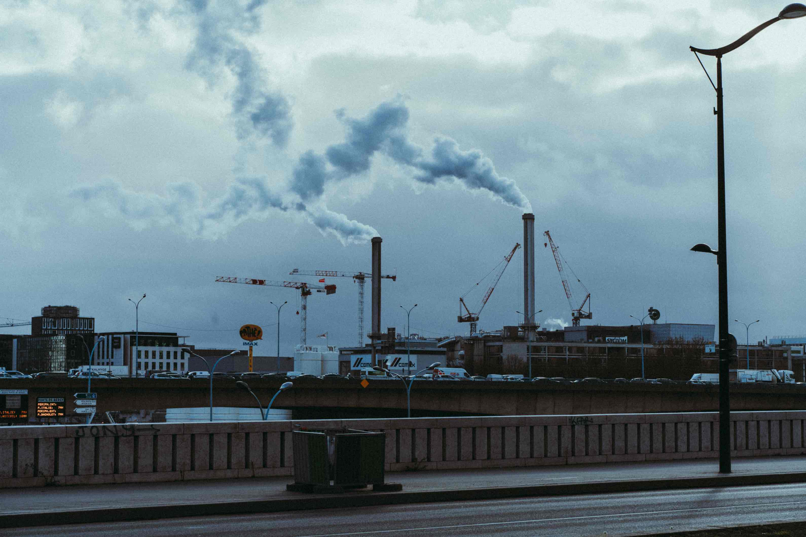

Pollution And Environmental Diseases
Pollution is mainly caused by human activities such as industrial emissions, poor disposal of wastes, mining, deforestation, use of fossil fuels and agricultural activities. Pollution can affect the air, the land and human health throughout the world.
POLLUTION
There are various types of pollution i.e. air, water, land, noise,
industrial, soil, light, thermal etc. and they are categorized based
on the region of the environment which they negatively impact,
contributing to the multiple causes of pollution. Accordingly, each
and every type of pollution has its own distinguishing causes and
environmental effects. Understanding pollution and its various
causes can help address the various concerns linked to environmental
degradation and destruction, and the dangers it brings to human
health.
Pollution is of many kinds, but the commonly known are air, land,
and water pollution. Below are the different types of pollution and
their distinctive comprehensive explanations.
Air pollution
Air is the most polluted environmental resource. It is the introduction of harmful substances in the air that results in detrimental impacts to the environmental and humanity. Air pollution reduces air quality by making it unclean or contaminated. It occurs when harmful substances such as foreign gases, odours, dust, or fumes are released in the air at levels that can harm the comfort or health of animals and humans, or even destroy plant life. Air pollution results from both human and natural activities. It is caused by emissions from manufacturing industries and power plants, vehicular emissions, smoking, natural events such as volcanic eruptions and wildfire, and burning of waste materials such as wood, rubber and plastics. The common air pollutants include hydrocarbons, volatile organic compounds (VOCs), dust particles, carbon monoxide, sulfur oxides, particulate matter, chlorofluorocarbons (CFCs), and nitrogen oxides.
Water Pollution
 Water pollution is the act of contaminating water bodies namely
rivers, oceans, lakes, streams, aquifers, and groundwater. It
occurs when foreign harmful materials like chemicals, waste
matter, or contaminated substances are directly or indirectly
discharged into water bodies. Any alterations in the chemical,
physical, or biological water properties qualify as water
pollution. Very often, the primary contributors to water pollution
are human activities since they introduce substances that
contaminate the water with harmful chemicals and toxic materials.
Water pollution is categorized into point source, non-point
source, and groundwater. Point source water pollution occurs when
the contaminants enter a water body from a single identifiable
source while non-point source occurs as a result of cumulative
effects of different amounts of contaminants. Groundwater
pollution occurs through infiltration and affects groundwater
sources such as wells or aquifers. Water is the considered the
second most polluted environmental resource after air pollution.
Water pollution is the act of contaminating water bodies namely
rivers, oceans, lakes, streams, aquifers, and groundwater. It
occurs when foreign harmful materials like chemicals, waste
matter, or contaminated substances are directly or indirectly
discharged into water bodies. Any alterations in the chemical,
physical, or biological water properties qualify as water
pollution. Very often, the primary contributors to water pollution
are human activities since they introduce substances that
contaminate the water with harmful chemicals and toxic materials.
Water pollution is categorized into point source, non-point
source, and groundwater. Point source water pollution occurs when
the contaminants enter a water body from a single identifiable
source while non-point source occurs as a result of cumulative
effects of different amounts of contaminants. Groundwater
pollution occurs through infiltration and affects groundwater
sources such as wells or aquifers. Water is the considered the
second most polluted environmental resource after air pollution.
The causes of water pollution include:
- The discharge of industrial waste in water bodies
- Discharge and dumping of waste materials and home made products such as plastics and detergents into water bodies
- Oil spills
- Natural disasters such as floods and hurricanes that lead to intermixing of water with dangerous substances on the land
- Sediments from soil erosion
Land Pollution
Land pollution is the destruction or decline in quality of the earth’s land surfaces in term of use, landscape and ability to support life forms. Many times, it is directly and indirectly caused by human activities and abuse of land resources. Land pollution takes place when waste and garbage is not disposed off in the right manner and as such, introduces toxins and chemicals on land. It also occurs when people dump chemical products to soils in the form of herbicides, fertilizers, pesticides, or any other form of the consumer by-products. Mineral exploitation equally leads to the decline in quality of the earth’s land surfaces. In this regard, it has grave consequences for human health, plant life, and soil quality. Acid rain, construction sites, solid waste, mineral exploitation, agricultural chemicals, and deforestations are the primary causes of land pollution.
Noise Pollution
Noise pollution is mostly an undesirable sound or sound which
generates horrible discomfort on the ears. It is measured in
decibels (dB) and sound levels beyond 100 dB can cause permanent
hearing loss. The industrial sound limit according to the World
Health Organization (WHO) is 75 dB. In the contemporary society,
noise has become a permanent aspect owing to the daily activities
such as transportation including airports, traffic and railroads,
industrial manufacturing, construction works, and concerts.
In contrast to the other types of pollution, noise pollution lacks
the element of accumulation in the environment. It merely occurs
when sounds waves of intense pressure reach the human ears and may
even affect the body muscles due to sound vibrations. Noise
pollution similarly affects marine and wildlife animals in the
same manner it affects humans, and can even cause their death.
Industrial Pollution

Industrial pollution is the release of wastes and pollutants
generated by industrial activities into the natural environment
including air, water, and land. The pollutants and wastes from
industries encompass air emissions, deposit of used water into
water resources, landfill disposal, and injection of toxic
materials underground.
Industrial pollution can adversely damage plants, kill animals,
cause ecosystem imbalance, and degrade the quality of life.
Leading industries such as power plants, steel mills, sewage
treatment plants, heating plants, and glass smelting among other
production, processing and manufacturing companies are the
contributors to industrial pollution.
They release smoke, effluents, material wastes, toxic byproducts,
contaminated residues, and chemical consumer products that
eventually end up in the environment thereby causing pollution.
ENVIRONMENTAL DISEASES
The air, the water, the sun, the dust, the plants, the animals, the
chemicals and metals are very essential our life. They make it
beautiful and fun but, as wonderful as they are they can also make
some people sick.
Here are some related environmental diseases.
Allergies and Asthma
Some human are sensitive to one or more allergens. They sneeze,
their noses run and their eyes itch from pollen, dust and other
substances. Some suffer sudden attacks that leave them
breathless and gasping for air. This is allergic asthma.
Asthma attack often occurs after periods of heavy exercise or
during sudden changes in the weather. Some can be triggered by
pollutants and other chemicals in the air and in the home.
Birth defects
Sometimes, when pregnant women are exposed to chemicals or drink a lot of alcohol, harmful substances reach the foetus. Some of these babies are born with an organ, tissue or body part that has not developed in a normal way. Aspirin and cigarette smoking can also cause birth problems. Birth defects are the leading cause of death for infants during the first year of life.
Cancer
Cancer occurs when a cell or group of cells begins to multiply more rapidly than normal. As the cancer cells spread, they affect nearby organs and tissues in the body. Eventually, the organs are not able to perform their normal functions. Some cancers are caused by substances in the environment: cigarette smoke, asbestos, radiation, natural and manmade chemicals, alcohol, and sunlight.
Heart Disease
While heart disease may be due in part to poor eating habits and/or lack of exercise, environmental chemicals also play a role. While most chemicals that enter the body are broken down into harmless substances by the liver, some are converted into particles called free radicals that can react with proteins in the blood to form fatty deposits called plaques, which can clog blood vessels. A blockage can cut off the flow of blood to the heart, causing a heart attack.
Nervous Disorders
The nervous system, which includes the brain, spinal cord and nerves, commands and controls our thoughts, feelings, movements, and behavior. The nervous system consists of billions of nerve cells. They carry messages and instructions from the brain and spinal cord to other parts of the body. When these cells are damaged by toxic chemicals, injury or disease, this information system breaks down. Straints and bike helmets can prevent injuries and save lives.
Vision Problems
Our eyes are especially sensitive to the environment. Gases found in polluted air can irritate the eyes and produce a burning sensation. Tiny particles from smoke and soot can also cause redness and itching of the eyes. Airborne organisms like molds and fungus can cause infections of the eyes and eyelids. Too much exposure to the sun’s rays can eventually produce a clouding of the lens called a cataract.